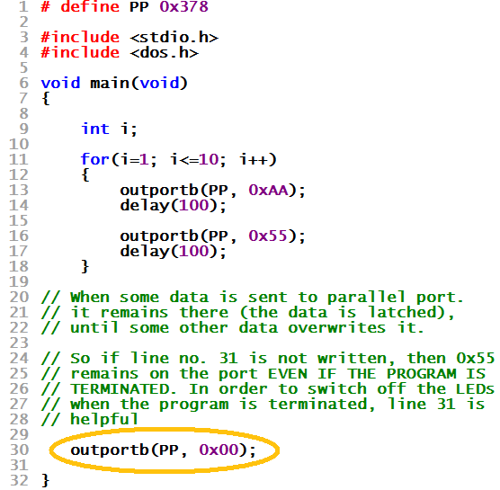

| WR Home Topic Home | Chapter: 1 |
| <Previous | Next> |
Chapter 01
Page 11
Also note that the bits get latched to the port pins, until there state is changed by another output instruction

The LEDs are switched OFF only due to the last outportb(PP, 0x00)
| WR Home Topic Home | Chapter: 1 |
| <Previous | Next> |